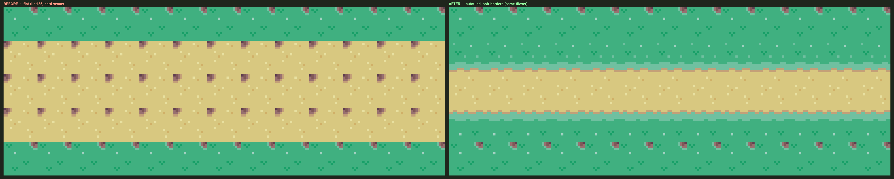
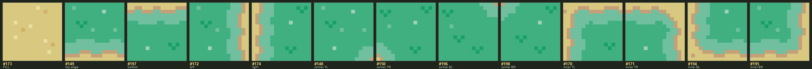
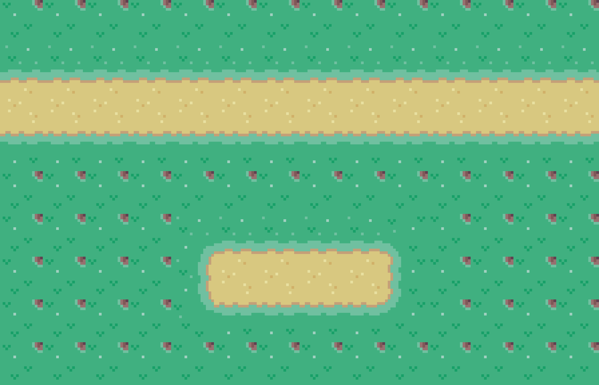
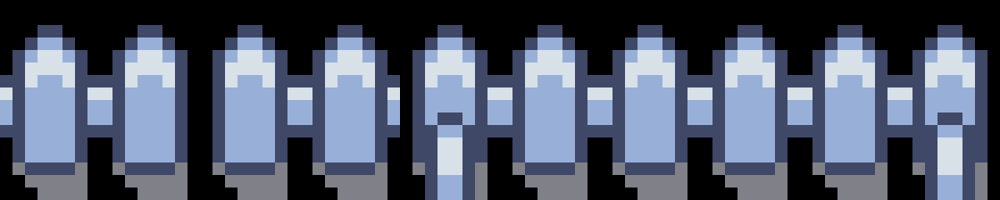

The town map looks unfinished — and it's one fixable cause
The settlement view (src/ui/town/TownScene.ts, the #/town route) renders the village as a 40×30 Phaser tilemap. Roads, the plaza, farm fields and board beds are all painted with a single flat tile — index 35, a sandy-tan ground tile — stamped in rectangular bands directly onto flat grass (index 26). Nothing transitions, nothing connects.

Five concrete failures
Where it lives in code
| File | What it does today |
|---|---|
ui/town/TownScene.ts | paintRoads() walks each road polyline and calls paintBand(), which stamps T.DIRT (= 35) in a rectangle. paintPlaza(), paintFields(), drawBoards() all stamp 35 too. |
ui/town/townMaps.ts | Hand-authored tier maps build roads with roadH()/roadV() writing flat DIRT bands into the ground grid. |
townLayout.ts | buildTownPlan() generates road centre-lines + width — good data! — that then get flattened to #35 bands at render. |
public/town/tileset.png | Tuxemon CC-BY-SA tileset (24×30 tiles, 32px). Contains the unused transition sets shown under Tiles needed. |
cartography/MapScene.ts) draws its roads as hand-inked vector curves between node medallions and already looks intentional; a small complementary pass is noted under Cohesion → World map, but it is not the focus.The tiles a road actually needs
A road is not one tile — it is a small connectivity family. Each cell must know which of its neighbours are also road, and show the matching shape. The minimum expressive set is 16 tiles (a 4-neighbour "thin path" set); the gold standard is the 47-tile blob (8-neighbour, adds the diagonal inner-corners that make junctions read cleanly).
The 16-tile thin-path family
Drawn below from the four cardinal connections (N/E/S/W). This is "the tiles needed" for streets 1–2 cells wide: straights, corners, T-junctions, a crossroads, end-caps and an isolated stub.
…and the supporting tiles for a whole town
It's already in the box — Phase 0 needs no new art
The shipped tileset contains a full grass↔sand rounded-patch blob. These exact tiles produced the "after" hero above:

173 fill · 149/197/172/174 edges · 148/150/196/198 outer corners · 170/171/194/195 inner corners. A complete blob — enough to autotile any road shape today.

219–223) already ship in the tileset and are unused. buildTownPlan() already computes exactly where roads cross the river — wiring these in is nearly free.The autotiler: choose a tile from its neighbours
The rule is mechanical. Build a boolean road mask over the grid. For each road cell, read which neighbours are also road, pack that into a bitmask, and look up the matching tile. Grass→road borders fall out of the edge/corner tiles automatically.
4-bit (thin path) vs 8-bit (blob)
| Scheme | Tiles | Reads neighbours | Best for |
|---|---|---|---|
| 4-bit connectivity | 16 | N E S W | Thin streets (1–2 wide), explicit junctions & end-caps. Recommended for roads. |
| 8-bit blob | 47 | + 4 diagonals | Filled areas — plaza, fields, board beds, wide avenues. Soft organic borders. Recommended for surfaces. |
Recommendation: a thin-path 16-set for streets + a blob for plaza/fields/wide avenues. Streets get crisp junctions; open ground gets soft borders. Both are tiny lookup tables.
Authoring change: describe where, let the tiler decide which
Authors and the procedural generator already speak in road centre-lines + width and plaza ellipses — they just get flattened too early. The new pipeline keeps that semantic layer and inserts a mask + autotile pass:
This is a clean separation and — crucially — both existing render paths (hand-authored townMaps.ts and procedural buildTownPlan()) feed the same mask, so the fix lands on every settlement at once. roadH/roadV and paintBand become "rasterise into mask" instead of "stamp flat tile."
// sketch — replaces the flat-DIRT stamp
function autotileRoads(mask /* boolean[rows][cols] */, tiles /* RoadTileSet */) {
for each cell (x,y) where mask[y][x]:
let bits = (N?1:0) | (E?2:0) | (S?4:0) | (W?8:0) // 4-bit street
put(tiles.byMask[bits], x, y) // 16-entry table
}
// plaza / fields / wide avenues use the 8-bit blob table instead.STREET ≈ 30px (≈1 tile) and AVENUE ≈ 46px (≈1.5 tiles) in buildTownPlan(). A 1-tile road can't carry a 2-sided soft border. Snap streets to 2 tiles (64px) and avenues to 3 (96px) so borders and a center line have room. The main avenue being visibly wider also restores the street hierarchy that's missing today.Making it cohesive — tie roads to place and progress
Material follows zone & tier
One autotiler, several surface palettes drawn from the same warm-earth→cool-stone family the cartography map already uses for its terrain disks. Material is chosen by (zone theme, settlement tier) — so your roads pave themselves as the town grows, making the Zone-Tier-Ladder upgrade visible underfoot.
| Zone family | Hamlet | Village | City / peak |
|---|---|---|---|
| Home / meadow / orchard | Packed dirt | Dirt + gravel verges | Cobblestone |
| Quarry / mine | Stone rubble | Flagstone | Cut-slab paving |
| Forge / boss / cave | Dark basalt / ember-cracked — driven by the existing config.ts per-theme dirtTint. | ||
Separate the surfaces
rows/angle) instead of flat tan.Knit the styles together
- Soft contact shadow where a road or plaza meets a building lot — a 1px ambient-occlusion lip visually seats the vector buildings onto the pixel ground, the single biggest fix for the "two art styles" clash.
- Bridges (tiles
219–223) at the river crossingsbuildTownPlan()already computes. - Lampposts / signposts snap to road edges and junctions, reinforcing the street lines.
World map — optional complementary pass
Out of primary scope, but for full cohesion the cartography roads (MapScene.drawEdge) could echo the same earth→stone palette and gain a faint dashed "footpath" texture so the overworld trails and the in-town streets feel like one road network at two zoom levels.
Phased plan
Front-loaded so the ugliest problem (hard seams) dies first, with no art dependency, then quality and cohesion layer on.
Phase 0 — Autotiler + existing tiles no new art
Build the road mask + 4-bit/blob lookup. Map it onto the shipped grass↔sand transition tiles. ConvertroadH/roadV/paintBand/paintPlaza/paintFields to write the mask. Bump street/avenue widths. Outcome: seams gone, real junctions, soft plaza — shippable on its own. Phase 1 — Bespoke dirt-path family
Draw a 16-tile (+blob) packed-dirt road set at 32px in the warm palette (hand-authored via thepixel-art-craft skill, or PixelLab top-down tileset). Swap the autotiler's tile table to it. Outcome: roads read as roads, not sand.Phase 2 — Materials & tier paving
Add gravel + cobblestone + flagstone + basalt variants; select by(theme, tier). Cobble-up on City tier. Outcome: place & progress legible underfoot; ties into Zone-Tier-Ladder.Phase 3 — Cohesion polish
Bridges, plaza rim, tilled fields, building-contact shadows, wear decals, world-map echo. Outcome: one coherent settlement look.Risk & cost
| Item | Note |
|---|---|
| Engine risk | low Pure additive ground-layer change; object layer, input, camera untouched. Deterministic → re-baseline visual goldens once. |
| Art cost | Phase 0 = none. Phases 1–2 = one small tileset per material (~16–24 tiles each). |
| Authoring | Existing maps keep working — they feed the mask unchanged. Width bump may nudge a few hand-placed lots; verify the tier-map tests. |
| Licensing | Phase 0 leans on CC-BY-SA Tuxemon tiles (already credited). Phases 1–2 replace them with repo-owned art — also resolves the "placeholder assets" note in public/town/CREDITS.md. |